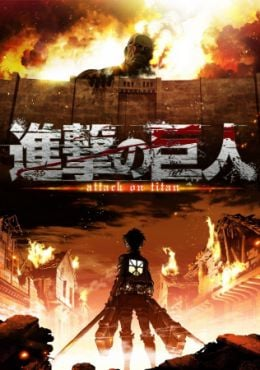

Jujutsu Kaisen:
Yuuji Itadori es un estudiante de instituto con unas habilidades físicas excepcionales. Todos los días, como rutina, va al hospital a visitar a su abuelo enfermo y decide apuntarse al club de ocultismo del instituto para no dar un palo al agua… Sin embargo, un buen día el sello del talismán que se hallaba escondido en su instituto se rompe, y comienzan a aparecer unos monstruos. Ante este giro de los acontecimientos, Itadori decide adentrarse en el instituto para salvar a sus compañeros. ¿Qué le deparará el destino?
Ver serie
Spy x Family:
Todo el mundo tiene una parte de sí mismos que no puede mostrar a los demás. En una era en la que las naciones de todo el mundo se encuentran involucradas en una feroz guerra de información a puerta cerrada, Ostania y Westalis llevan décadas en guerra fría. La División de Inteligencia de Westalis (WISE) envía a su mejor espía, "Twilight", en una misión ultrasecreta para vigilar los movimientos de Donovan Desmond, quien dirige el Partido Nacional por la Unidad de Ostania, responsable de bombardear los esfuerzos de paz entre ambos países. La misión tiene por nombre "Operación Strix".
Ver serie
